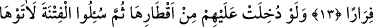

BİZ
PEYGAMBERLERDEN PEK SAĞLAM
BİR SÖZ ALDIK
7. Hani biz peygamberlerden söz almıştık; senden, Nuh’tan, İbrahim’den,
Musa’dan ve Meryem oğlu İsa’dan da. (Evet) biz onlardan pek sağlam bir söz aldık.
8. Allah bu sözü doğruları doğruluklarıyla sorumlu kılmak için aldı. Kâfirler için
de çok acıklı bir azap hazırladı.
9. Ey îman edenler! Allâh’ın size olan nîmetini hatırlayın; hani size ordular
saldırmıştı da, biz onlara karşı bir rüzgâr ve sizin görmediğiniz ordular
göndermiştik. Allah ne yaptığınızı çok iyi görmekteydi.
10. Onlar hem yukarınızdan hem aşağı tarafınızdan (vâdinin üstünden ve alt
yanından) üzerinize yürüdükleri zaman; gözler yıldığı, yürekler gırtlağa geldiği ve
siz Allah hakkında türlü türlü şeyler düşündüğünüz zaman;
11. İşte orada îman sahipleri imtihandan geçirilmiş ve şiddetli bir sarsıntıya
uğratılmışlardı.
12. Ve o zaman, münafıklar ile kalplerinde hastalık (îman zayıflığı) bulunanlar: